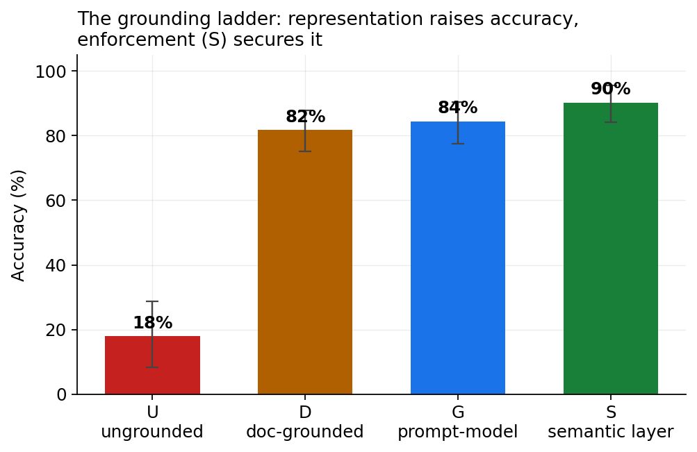
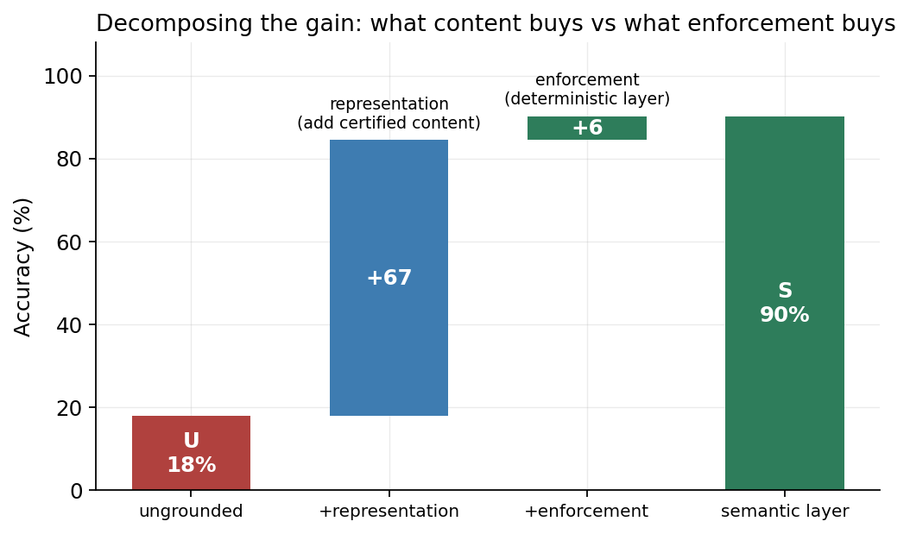
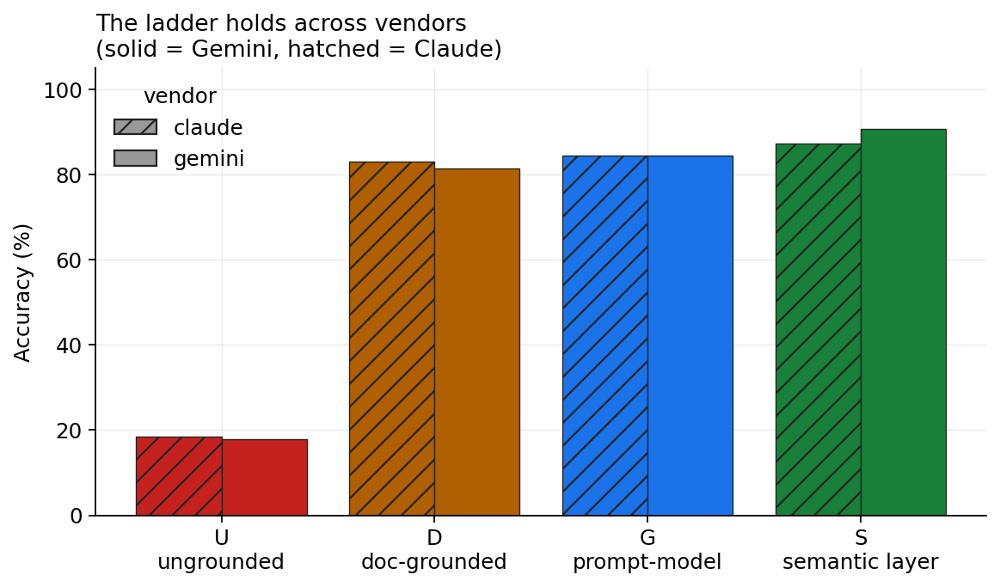
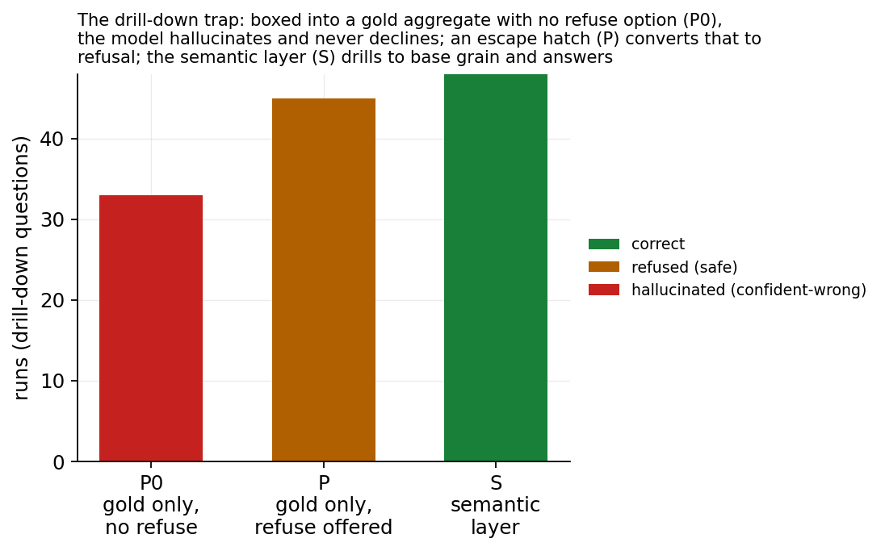
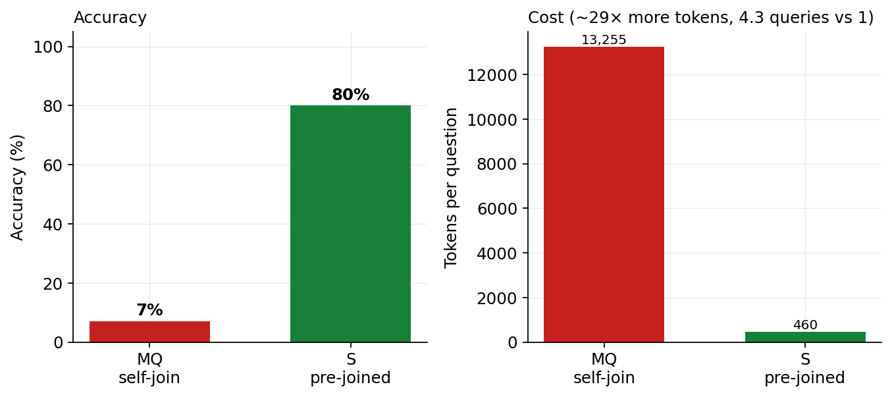
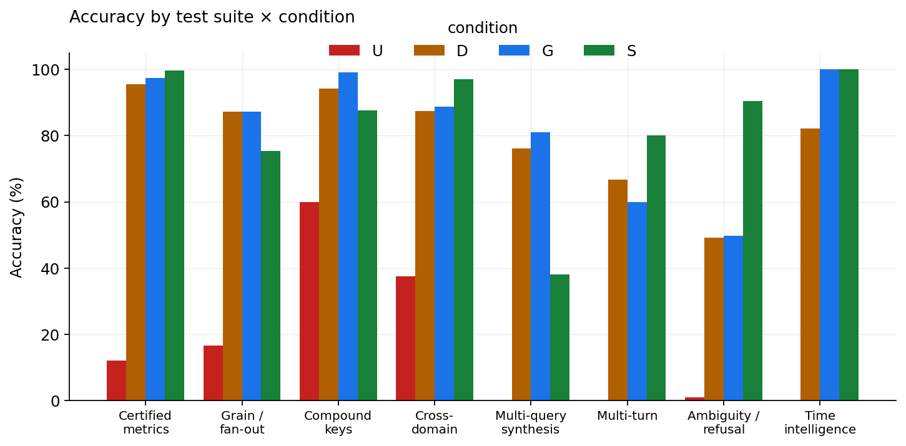
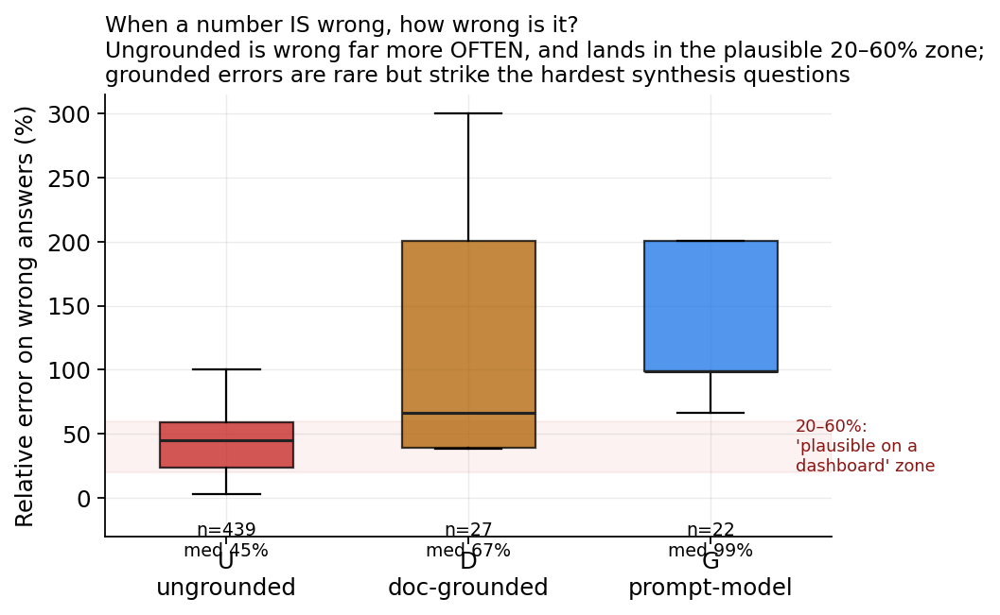
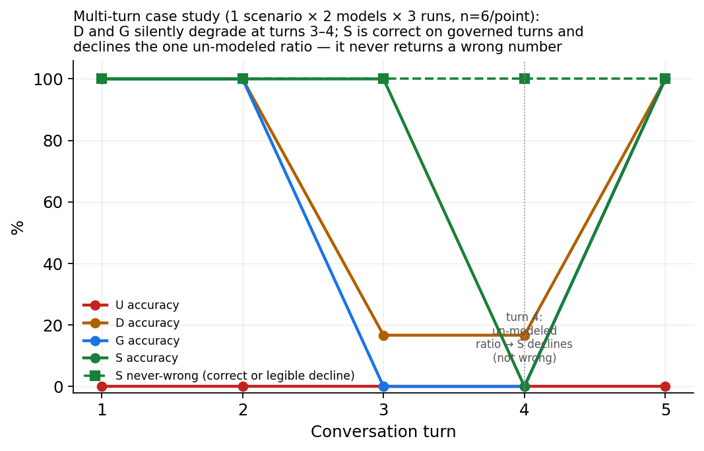
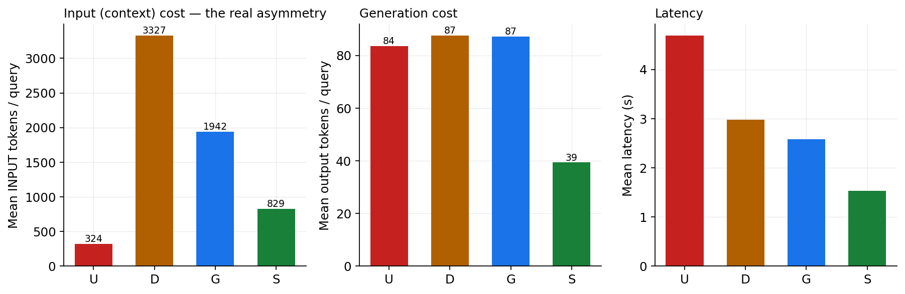

The Missing Step in ELT: Modeling (M), and the Semantic Gold Layer It Produces
We propose a fourth step for the data pipeline — M for Model — turning Extract–Load–Transform into ELTM, and show in a controlled two-vendor benchmark that the governed Semantic Gold Layer it produces is what makes LLM-generated analytics correct
The data pipeline has a well-worn shape: Extract, Load, Transform (ETL, now usually ELT). We argue it is missing a step, and we name it. Large language models can write SQL, but that is not the same as producing a correct answer to a business question, because the hard part of enterprise analytics is not syntax — it is semantics: which rows are revenue, at what grain a number is additive, which column is an identity and which is a label, and how two systems that share no key are joined. None of that survives Transform, which yields only clean tables; meaning lives in a separate, governed artifact. This paper proposes that artifact as a first-class pipeline stage — a fourth step, M for Model — extending ELT to ELTM (Extract → Load → Transform → Model), and gives its output a name: the Semantic Gold Layer, the governed, enforced top of the warehouse that a human or an LLM queries by meaning rather than by table. We ask one controlled question: does the form in which business semantics are supplied to an LLM change the correctness of the analytics it produces, and how much of any effect is the content of the semantics versus their deterministic enforcement? We define a four-rung grounding ladder — U (ungrounded; physical schema only), D (the same facts as grounded documents), G (the same facts as a structured semantic model in the prompt), and S (a governed semantic layer that compiles a validated query plan to SQL deterministically and refuses out-of-model questions). Holding questions, data, and ground truth fixed, we run 4485 scored trials across 52 business-language questions, two model vendors (Google Gemini and Anthropic Claude; 9 models, of which 7 have complete coverage and anchor every headline number — two partial single-run tiers are reported separately, never pooled), and two purpose-built warehouses whose answers are known by construction — with planted traps for grain/fan-out, compound keys, identity collisions, messy vocabularies, time intelligence, and a cross-domain causal effect with a confounder. Accuracy climbs the ladder from 17.9% (U) to 81.7% (D) to 84.5% (G) to 90.2% (S), and the ordering is identical for both vendors. Decomposing the climb, certified content (U→G) accounts for +66.6 points and can be delivered in-prompt, while deterministic enforcement at identical content (G→S) adds a further +5.7 points (McNemar p ≈ 1e-5). Enforcement’s value is concentrated where it matters most and is not uniform: the semantic layer is near-perfect on certified metrics, cross-domain joins, and time intelligence, and it refuses the unanswerable questions the free-form conditions confidently fabricate answers to (90.5% vs ≤49.7% correct on the refusal suite); it also compresses the capability gap, lifting the weakest model most. The layer’s apparent cost — it can only answer what is modeled — turns out to be a workflow, not a wall: in a controlled iteration we played the semantic architect and drove condition S to 100% on every question, for every model with complete coverage in both runs, with just 8 durable, verified edits (five of which required no model inference at all), whereas the same class of edit lifted the free-form conditions only partway and they plateaued below 100% — a prompt can ask a model to refuse or use a formula, but cannot enforce it. Enforcement is also the cheapest layer to run (≈4× fewer tokens per query than the document condition, and lowest latency) and the cheapest to make correct. The result is a measurement of what the M is worth: modeling is not documentation to be pasted into a prompt but a first-class, enforced engineering step whose correctness, once verified, compounds. We offer ELTM and the Semantic Gold Layer as names for that step and its output — the future of ELT in the era of LLM-driven analytics.
1 Introduction
The dominant narrative around large language models (LLMs) and data is that natural-language-to-SQL closes the “last mile” between a business user and their warehouse: ask a question in English, get a query, get an answer. The narrative is half right. Modern models are genuinely good at syntax — they emit well-formed SQL in the correct dialect with high reliability. But a well-formed query is not a correct answer. The difficulty in enterprise analytics has never been syntax. It is semantics: knowing that “revenue” means shipped-or-delivered orders net of discounts and not the convenient pre-computed line_total column; that a shipping fee recorded at order grain must not be summed across the line rows it fans out over; that forty different customers named “John Smith” are forty identities, not one; that two source systems which share no key can only be joined through a bridge after their email addresses are normalized. None of this is in the physical schema. It lives in the heads of analysts, in wiki pages, in tribal memory — and, increasingly, in a semantic layer.
The missing step in ELT. For a decade the canonical data pipeline has been Extract, Load, Transform — ETL, and latterly ELT once cheap warehouse compute let teams transform after loading. Transform’s job is to produce clean, correct tables: typed, deduplicated, conformed. But a clean table is not a meaning. “Which of these columns is revenue, net of what, at which grain, excluding which statuses, joined to customers by which key” is not a property of the table — it is a separate artifact that sits above it, and today it has no agreed place in the pipeline. We propose one. We name the step that produces and governs that artifact Model — M — and the extended pipeline ELTM (Extract → Load → Transform → Model): the future of ELT. To be clear about provenance, ELTM is not an existing industry term; we are coining it here, and we define it precisely so it can be argued with and measured.
We also name the M’s output, and the distinction is the crux. We borrow the medallion vocabulary of bronze/silver/gold deliberately, and it is worth being precise about where we keep it and where we break from it: the raw (bronze) and refined (silver) layers carry over essentially unchanged — the divergence is entirely at gold.1 Where “gold” denotes the curated, business-ready top, the conventional gold layer is a set of curated tables. A single wide, denormalized gold table is genuinely flexible within its grain: revenue by region, by category, by month are all one table and a GROUP BY, no new pipeline. The trap is at the boundaries it cannot cross. A table is aggregated to one grain, so you cannot drill below it (a daily-revenue-by-region rollup cannot answer a per-order question — the detail is gone). And it spans one fact at one grain, so it cannot, by itself, put order-grain shipping next to line-grain revenue, join sales to a separate returns event, or reach across the CRM/HR/LMS divide. Each of those is a new build: a ticket, days of latency, and a fresh chance to define revenue inconsistently. This is the Golden Layer Trap — flexible until you hit a grain, fact, or domain boundary, then stuck.
The M’s artifact is different in kind. We call it the Semantic Gold Layer: not another tier of tables but a governed layer of meaning over them — an enforced semantic model of measures at their true grains, identities, and joins that compiles any question on demand, including the ones that cross those boundaries, and refuses what it cannot answer. You do not pre-build the slice; you model each measure once at its real grain and then drill down to detail, combine measures across grains, join across facts and source systems, and follow up freely — every combination generated correctly at query time. Transform gives you gold tables; the M gives you the Semantic Gold Layer, and the difference between them is the difference between a fixed answer and an answerable model. The thesis of this paper — and of the book it accompanies, The Semantic Gold Layer — is that in the LLM era the M is no longer optional polish but the load-bearing step: it is what stands between a fluent model and a wrong number. Everything that follows is an attempt to measure that claim rather than assert it.
Concretely, the mapping to the medallion architecture is layer-by-layer, and it is only at the top that we depart:
| Medallion layer | What it holds (traditional BI) | ELTM stage | What changes for the AI era |
|---|---|---|---|
| Bronze | Raw data landed from sources, append-only | Landing Zone | Unchanged — lossless, replayable capture |
| Silver | Cleaned, typed, deduplicated, conformed | Refined Zone | Unchanged in spirit, with one rule made explicit: kept at the lowest grain, never pre-aggregated |
| Gold | Curated physical marts, pre-aggregated for dashboards | Semantic Gold Layer (the M) | Replaced in kind: physical tables become a virtual, governed model of measures, grains, and joins — compiled on demand, and able to refuse |
This paper isolates one causal question and answers it under controlled conditions:
Does the form in which business semantics are supplied to an LLM change the correctness of the analytics it produces — and if so, how much of the effect is the content of the semantics versus the deterministic enforcement of them?
To answer it we hold everything else fixed — the same business-language questions, the same data, the same ground truth — and vary only the grounding along a four-rung ladder (§3). We build two synthetic-but-realistic warehouses (§4) whose correct answers are known by construction, seeded with the specific traps that separate syntax from meaning. We evaluate 9 models across two vendors (Gemini and Claude), score 4485 trials (§5), and report where each rung of grounding helps, where it does not, and — crucially — what kind of failure each rung leaves behind (§6).
Our findings are threefold. First, grounding helps enormously and monotonically: accuracy rises from 17.9% ungrounded to 90.2% under the semantic layer, with the identical ordering U < D ≲ G < S for both vendors. Second, the climb decomposes: certified content (U→G) buys most of the gain and is deliverable in a prompt, while deterministic enforcement (G→S) buys a further, statistically significant increment concentrated in the highest-stakes failure modes — silent fan-out, confident answers to unanswerable questions, and definition drift across a conversation. Third, and most importantly, enforcement is a trade, not a free lunch: because the layer can only answer what is modeled, it is near-perfect on governed questions and refuses the rest, underperforming the free-form conditions on ad-hoc metrics it was never given. For any setting where a wrong number is worse than no number — most of enterprise finance and operations — that trade is the one you want.
3 The grounding ladder
We define four conditions. Every condition receives the identical business-language question and queries the identical warehouse; they differ only in how business semantics are supplied and whether they are enforced.
- U — Ungrounded. Only the physical schema (DDL); the model writes one SQL query. The “point the model at the database” baseline.
- D — Document-grounded. The DDL plus a bundle of grounded documents — an Open-Knowledge-Format-style markdown corpus (frontmatter, prose definitions, per-metric and per-table pages describing meaning, grain, joins, vocabulary). The “context files / RAG” condition. It still writes raw SQL.
- G — Prompt-grounded model. The DDL plus the same facts as D, serialized as a compact structured semantic model (measures with base grains and aggregation SQL; dimensions with identity/label annotations; a join graph; vocabulary maps). It still writes raw SQL. Because D and G are emitted from a single source of truth, any D-vs-G difference is representation, not content.
- S — Semantic-layer-mediated. The model may not write SQL. It selects fields and returns a query plan; a deterministic compiler validates the plan against the model and generates fan-out-safe SQL, or returns a structured refusal when the question cannot be answered from the modeled fields. Enforcement lives in the compiler, not the model.
The ladder is designed so that D→G isolates representation (documents vs. structured model, content held equal) and G→S isolates enforcement (same content, but deterministically compiled and refusable rather than free-form). Figure 2 makes this decomposition explicit.
The compiler underpinning S provides three guarantees by construction, independent of the model: (1) each measure is aggregated at its declared base grain and measures at different grains are combined via a full outer join on shared dimensions, so an order-grain measure can never fan out over line rows; (2) a measure requested with a dimension finer than its grain is refused, not silently inflated; (3) unknown fields are refused, and business vocabulary (and calendar values such as a bare year) are resolved to stored representations. These are exactly the failure modes that separate a well-formed query from a correct answer.
4 Benchmark design
4.1 Ground truth by construction
Every dataset is generated by a seeded program, so the correct answer to every question is known analytically — not adjudicated by a human or an LLM judge. Ground truth is computed through the same certified compiler that condition S uses, over the seeded data. This is the methodological keystone: it removes grader subjectivity and makes the pipeline reproducible with make reproduce.
4.2 D1 — NorthStar Commerce (retail)
A line-item retail warehouse (customers, products, orders, order-items, marketing, returns) seeded with the canonical semantic traps: grain / fan-out (shipping_fee at order grain, discounts at line grain; a deliberately wrong pre-discount line_total column); identity vs. label (forty distinct customer_ids share the name “John Smith”); compound keys (a returns table keyed by (order_id, line_number) with an undeclared FK — joining on order_id alone inflates refunds by 3.65×); messy vocabulary (“paid search” stored as paid_search, Paid-Search, PPC); time intelligence (a February-start fiscal calendar); and ambiguity / refusal (questions with no answer in the schema, and genuinely ambiguous ones that should trigger clarification).
4.3 D2 — Cross-Domain Enterprise (Learning × Sales × HR)
Three source systems that look unrelated. Sales opportunities are keyed by employee_id; a learning-management system is keyed by a messy email; an HR bridge is the only path between them, and only after the email is normalized (lowercased, legacy .contractor alias stripped). D2 plants a causal effect by construction: completing an “Advanced Negotiation” course raises quota attainment by a true +0.129 (tenure-adjusted), while course completion is itself correlated with tenure, so the naïve gap is a larger +0.1722; a placebo course has a null effect (-0.002). A certified rollup resolves the identity join once inside the layer; conditions U/D/G must reconstruct it from raw tables (the bridge rollup is deliberately absent from the physical DDL they see).
4.4 Test suites
Eight suites: (1) certified metrics, (2) grain & fan-out, (3) compound keys, (4) cross-domain correlation & join, (5) multi-query synthesis, (6) multi-turn conversations, (7) ambiguity, vocabulary & refusal, and (8) time intelligence. All questions are phrased in business language; no schema column names leak into the prompt.
5 Methodology
Models and vendors. We evaluate two vendors. From Google Gemini (called via the Generative Language API): gemini-2.5-flash-lite, gemini-2.5-flash, gemini-2.5-pro, gemini-3.5-flash, gemini-3.7-flash (the current-generation flash tier), and gemini-3.1-pro-preview (the current-generation Pro tier). From Anthropic Claude: claude-haiku, claude-sonnet, and claude-opus. The tiers span a wide capability range within each vendor, testing whether raw capability substitutes for grounding. Note that condition S never asks a model to author SQL — its correctness is a property of the compiler, largely invariant to model choice.
A note on version pinning, for transparency. The identifiers above are the exact model strings we called, and we report them precisely because the effect we measure could otherwise be confused with a model-selection artifact. Two honest caveats follow from this. First, the Gemini strings without a date suffix are rolling aliases, not immutable snapshots — the provider may update the weights they point to over time — so an exact re-run reproduces our harness and data deterministically but not necessarily the provider’s model of a given day; gemini-3.1-pro-preview is additionally a preview build. Second, the Claude tiers name the vendor’s Haiku/Sonnet/Opus classes as served during the run; combined with the batched subagent protocol for that arm (below), the Claude results are best read as corroborating the ladder rather than as a snapshot-pinned replication. The load-bearing result — condition S — is the most robust to all of this, since S’s correctness comes from the compiler, not the model.
Protocol. For U/D/G we build the condition’s prompt, extract the SQL, execute it on DuckDB, and compare to ground truth; for S we compile the returned plan and execute, or record its refusal. A refusal to an answerable question scores wrong; a refusal to an unanswerable one scores correct. The output-token budget is 2048 for all tiers except the reasoning-tier gemini-3.1-pro-preview, which uses 8192: at 2048 that model spends the budget on hidden “thinking” tokens and truncates the visible SQL mid-statement (a harness limitation that produces a spurious parse error, not a genuine model failure), so we give it headroom to emit a complete query. The two smaller Gemini tiers are run five times per cell and the others one to three times; we report 95% cluster-bootstrap confidence intervals that resample questions (the unit of generalization), so the intervals reflect question-to-question variation, not just run noise. The Claude arm is administered through a batched protocol (grounding shown once per condition, every question answered independently, one run) — a documented variant of the Gemini per-call protocol (§7).
Coverage. We report the number of runs per (model × condition) and flag every tier as complete or partial; the 7 complete tiers reached ~all questions and anchor all pooled numbers, while two partial single-run tiers (which ended after the first suites) are reported separately and never averaged into a headline. Perfect-looking scores from a tier that never reached the hard suites are thus impossible to mistake for the real thing.
Scoring. Numeric answers use a 1% relative tolerance; set/top-N answers use order-insensitive matching. A distinct outcome class, declined_unmodeled, separates condition S’s legible declines of un-modeled ad-hoc metrics (it returns modeled components or refuses) from genuinely wrong answers, so the two are never conflated in any table. Beyond correctness we compute (i) error magnitude — the relative error when a numeric answer is wrong; (ii) heuristic SQL audits flagging fan-out, partial-key joins, missing certified filters, use of the known-bad line_total, un-normalized identity joins, and grouping a label instead of an identity (these target model-written SQL and are not applied to the compiler-generated SQL of condition S); and (iii) consistency across paraphrases. Statistics: McNemar exact paired tests between adjacent rungs, pairing on (question, model, run).
6 Results
6.1 The ladder
Pooled across the 7 complete-coverage models and both datasets, accuracy rises monotonically along the grounding ladder (Figure 1): U 17.9% (95% CI [7.7, 28.9]) → D 81.7% ([75.4, 88]) → G 84.5% ([77.9, 90.5]) → S 90.2% ([83.9, 95.6]). Every adjacent step is significant by McNemar’s exact test (U→D p≈1e-191; D→G p≈9e-5; G→S p≈1e-5). The ungrounded baseline is not merely worse — it is close to unusable on business-language questions, because the physical schema does not encode what the questions mean. (Two partial single-run tiers, gemini-2.5-pro and gemini-3.5-flash, reached only the first one-to-two suites before their run ended; their high scores reflect easy questions only and are excluded from every pooled number — their partial coverage is disclosed with per-cell counts, not silently averaged in.)
A note on what S’s sub-100 means before the iteration of §6.7.1. Decomposing condition S’s outcomes among the 7 complete-coverage models (n=1017 S runs), only 1.1% of its answers are genuinely wrong — a confidently returned incorrect number. A further 7% are legible declines: questions asking for an ad-hoc metric not yet in the model, where S returns the modeled components or refuses rather than inventing a value. We score these as a distinct declined_unmodeled class, never as correct but also never conflated with hallucination — because the two failure modes could not be more different for a user who must trust the number. S essentially does not hand back a wrong number; it hands back a smaller, honest one, or nothing.

6.2 Representation versus enforcement
Figure 2 decomposes the climb. Moving from an ungrounded prompt to the certified structured model (U→G) adds +66.6 points — the value of content, deliverable in-prompt. Moving from that same content in the prompt to deterministic enforcement (G→S) adds a further +5.7 points. In paired terms, S corrects 116 cases that G got wrong while regressing on 58 (McNemar p≈1e-5); the regressions are almost entirely ad-hoc metrics the layer was never given (§6.7), while the corrections are silent, high-stakes errors — fan-out, un-refused impossibilities, drift.

Comparing the two representations of identical content, document-grounding (D) and structured-model grounding (G) reach 81.7% and 84.5% (D→G p≈9e-5) — structure helps modestly beyond prose, and both vastly outperform no grounding.
6.3 The ladder holds across vendors
The effect is not a quirk of one model family. The same ladder appears across both vendors and across model generations — from the 2.5-era Gemini tiers through the current-generation gemini-3.7-flash and gemini-3.1-pro-preview, and across the Claude Haiku/Sonnet/Opus tiers (Figure 3): Gemini U 17.8% → S 90.6%, Claude U 18.4% → S 87.2%. Across the 7 complete-coverage models, the ordering U < D ≤ G < S holds for every model, and condition S is strikingly consistent — each lands between 84.4% and 100% under the layer — whereas U/D/G swing widely with capability (see §6.8). (The two partial tiers show D/G inversions on their easy-suite-only coverage — gemini-2.5-pro scores D above G, claude-opus ties them — which is a coverage artifact, not a counterexample; we use ≤ rather than < between D and G for exactly this reason.)
This vendor split is a robustness check that the ladder replicates, not a vendor benchmark, and should not be read as a ranking. The two vendors’ pooled sets are not matched capability-for-capability — the Gemini pool deliberately includes a weak floor tier (gemini-2.5-flash-lite) with no equivalent in the Claude pool, which if anything drags the Gemini average down — so the takeaway is that both vendors climb the same rungs in the same order, at every tier we tested.

6.4 Drill-down without getting stuck: gold tables vs. the Semantic Gold Layer
The benchmark is, incidentally, a direct test of the gold-table-vs-Semantic-Gold-Layer distinction drawn in the introduction — and we are careful not to overstate it. A single wide gold table handles same-grain group-bys perfectly well; net_revenue alone is queried 9 different ways (total, by region, by category, by month, by fiscal year, by channel, by customer identity, filtered to paid search), and we do not claim those need a table each — a denormalized line table serves all eight with a GROUP BY. The airtight claim is narrower and stronger. Of the 30 distinct question-shapes the suites exercise (from 21 certified measures), 10 cross a grain, fact, or domain boundary that no single pre-aggregated table can span: 3 combine measures at different base grains (order-grain shipping beside line-grain revenue; sales beside the separate returns event; a cross-grain ratio), and 7 reach across the CRM / HR / LMS source-system divide via the identity bridge. (Several additional questions scored against hand-written SQL — shipping-as-%-of-revenue, net-of-refunds, the tenure-confounded lift — are also cross-boundary, so 10 is a conservative floor.) Condition S compiles every one of these on demand from the fixed measure set; a pre-aggregated gold layer needs a new build for each, because the boundary is exactly what one table cannot cross. The full classification, with the reason per shape, is reproduced by score/composability.py.
The multi-turn case study (Figure 8) shows the same property dynamically: a user drills from total net revenue, to net revenue by region, to shipping by region (an order-grain measure now beside a line-grain one — a grain boundary), to shipping as a percentage of revenue, and back — and the layer follows the drill-down turn by turn, recompiling each at the right grain rather than getting stuck on a fixed rollup. This is what “keep context and drill down” means operationally: not a wider pre-computation, but a model that answers the next question, and the one after that, without anyone rebuilding a table. Where a governed answer does not yet exist (the un-modeled ratio at turn 4) the layer declines legibly rather than returning a stale or wrong number — and, per §6.7.1, that gap is closed once by promoting a measure, never again.
6.5 The drill-down trap: what happens when there is nowhere to drill
Composability shows the semantic layer can drill anywhere; a natural follow-up asks what a model does when it cannot — when it is handed a conventional pre-aggregated gold layer whose detail below its grain has been summed away. We built a small controlled test: two pre-aggregated gold tables (revenue by region×month, sales by category) and six questions — four that need sub-grain detail the aggregates discarded (a specific customer, the paid-search channel, distinct-customer counts, a region×category cross) and two controls the aggregates can answer. Three conditions, four Gemini tiers, three runs: P0 (gold tables only, a naive “answer this” prompt), P (the same gold tables, but the prompt also offers REFUSE as an option), and S (the semantic layer, which can drill to base grain).
The result is stark, and it isolates where the danger actually lives (Figure 4). On the un-answerable drill-downs, condition P0 never once declined: across 48 runs it refused 0 times and instead returned a confident, wrong number 33 times (erroring on the rest). Give the same boxed model an explicit way out — condition P — and it refuses 45 of 48 and hallucinates 0. Condition S simply drills to the base grain and is correct 48/48. All three handle the controls (P0, P, and S each correct on 24/24), confirming the failure is specific to drilling below the pre-aggregated grain, not the tables being unusable. As a reference point, condition U — which has the base tables but is run with the same naive, no-refuse prompt — also fabricated (43 of 48): confident fabrication is driven by the “must answer” framing, and only removed by either an escape hatch (P) or reachable detail (S).
Two lessons follow. First, the practitioner’s instinct is right but the mechanism is precise: a model boxed into an aggregate does not know it is stuck — given no way to say so, it fabricates every time. Second, the mitigations are of different kinds. Offering a refuse affordance is a cheap and effective patch (it converts fabrication into abstention), but it only ever yields “I can’t answer that.” The semantic layer removes the trap outright, because the detail is still reachable: it answers. Pre- aggregation is not a performance optimization with a documentation footnote; it is a decision to make a class of questions unanswerable, and an ungoverned model will paper over that decision with confident fiction.

6.6 Model-orchestrated joins vs. the pre-joined layer
The cross-domain result (§6.7 below and the D2 suite) already shows that a model writing a single cross-source JOIN in SQL underperforms the pre-joined layer. But the pattern most often proposed today is more ambitious: point an agent at two sources — two connections, two “explores” — and let it issue separate queries and stitch the results itself. We tested that mode directly. In condition MQ the model may run only single-table queries (no joins), one at a time, in an agentic loop, seeing each result and carrying keys and values between steps to combine the sources by hand; we compare it to S, one deterministic pre-joined query. On the five D2 cross-domain questions (Figure 5):
- Accuracy: MQ 7% vs. S 80%. Stitching by hand is where it slips — ferrying hundreds of join keys through a capped result set, aggregating before rather than after the join, and reconstructing the email-normalization bridge each time. A representative failing run issues five queries — resolve the course id, list its 318 completers, fetch their emails, normalize those to employee ids, average attainment — but the row cap truncates the 318-key handoff, so the final average runs over a subset and lands near the truth by luck rather than by construction.
- Capability does not fix orchestration. Per tier the accuracy is flash 20%, flash-lite 0%, and the flagship pro 0% — the strongest model scored zero at self-joining two sources. Orchestration skill is not a capability the ladder climbs; it is work the layer should do once.
- Efficiency: 4.3 queries per question vs. 1, about 29× the tokens (13255 vs. 460) and ~27× the latency (26.5s vs. 1s).
For a like-with-like comparison the S arm is restricted to the same Gemini tiers MQ ran on; S is 89% on the Gemini subset, 80% on the Claude subset, and 88% pooled — identical, so the restriction does not affect the result. (The pro MQ arm is partial — 11 of 15 runs completed before the ~26.5s orchestration loop timed out on one question; its completed runs scored 0%, in line with the others.)
We are careful about the determinism claim: at temperature 0 the self-join was not flaky — it was consistently wrong. The layer’s advantage is therefore not “less random” but correct by construction: one compiled query returns the right answer every time at a small fraction of the cost. (The single-query interface caps returned rows, as a real tool would; without the cap the self-join would trade its accuracy failure for an even larger token bill, passing hundreds of literals between steps.) The lesson for the agentic era is concrete: if two sources will be asked about together, pre-join them once in the model — the explore is the join, done deterministically — rather than asking the agent to rediscover and recompute it, expensively and unreliably, on every question.

6.7 Where enforcement wins, and where it trades
Figure 6 breaks accuracy down by suite, and this is where the honest, nuanced picture emerges. Condition S is at or near the top exactly where governance decides the answer:
- Certified metrics (suite 1): S 99.6% — the certified definition of revenue, applied identically every time.
- Cross-domain join (suite 4): S 97% — the identity bridge and email normalization are modeled once; U/D/G must reconstruct them and often cannot.
- Time intelligence (suite 8): S 100% — the fiscal calendar and calendar-year filters compile correctly by construction.
- Ambiguity & refusal (suite 7): S 90.5% versus D 49.2% and G 49.7%. This is the signature result: asked questions with no answer in the data (revenue by customer age, top supplier), the free-form conditions fabricate a query against an unrelated column and return a confident number; S refuses. That is the difference between fail-loud and fail-silent, and it is an architectural property, not something a bigger model fixes.
The layer’s cost is flexibility. Because S can only answer what is modeled, it underperforms the free-form conditions on ad-hoc synthesis it was never given: multi-query ratios and differences (suite 5; suite 2) such as “shipping as a percentage of revenue” or “net revenue after refunds,” which are not certified measures. There, S returns the modeled components rather than an un-modeled derived metric — wrong for the question, but legibly so (the declined_unmodeled class). It is worth being precise about what drags S’s suite averages down here, because it is not fan-out or compound-key failure — S’s guarantees hold: on the actual grain/fan-out questions (shipping by region, revenue and shipping side-by-side, line counts) and the actual compound-key questions (refunds by category, joined on the full key) S is correct. The only sub-100 cells are the handful of ad-hoc derived metrics mis-bucketed into those suites, every one of which is a legible decline, not a wrong number.
We report this not as an embarrassment but as the mechanism itself. An un-modeled metric is not a dead end; it is a signal. In the free-form regimes, “shipping as a percentage of revenue” is answered by a model guessing at a formula every single time it is asked — sometimes right, sometimes silently wrong, never accountable, and never the same twice. In the governed regime it is a request that surfaces to a human-in-the-loop semantic architect: define the ratio once, test it against known ground truth, verify it, and promote it. After promotion the metric is deterministically correct for that query and every future query that touches it — and no one ever has to re-adjudicate it. The claim of this paper is emphatically not that a semantic layer (or a grounded model) is always right. It is that correctness becomes testable, repeatable, and promotable: a one-time engineering decision that compounds, rather than a per-query gamble that must be re-won on every ask. What looks like S’s missing 34 points on the ad-hoc suites is really the backlog of the architect’s job — and, unlike the free-form conditions’ errors, that backlog is visible, finite, and, once cleared, permanent.

6.7.1 The promotion experiment: the trade-off is the workflow
The previous section’s “limitation” is testable as a mechanism. We ran a second, pre-registered experiment: acting as the human-in-the-loop semantic architect, we took three of the ad-hoc metrics S could not answer — “average shipping fee per order,” “shipping as a percentage of revenue,” and “net revenue after refunds” — defined each once as a certified measure (two of them as derived measures combining existing certified measures at different grains), verified each against ground truth (all three match to within floating-point error), and promoted them into the single semantic model. Because the model is one source of truth, the new definitions flow to conditions D, G, and S alike. We then re-ran the affected questions.
The result is the compounding-governance claim in miniature (measured on the four models complete in both runs — Gemini flash-lite and the three Claude tiers, to isolate the promotion from re-run noise):
- Condition S rose from 84.9% to 92.6% overall (+7.7 points), and on the three affected suites the gains are large and mechanical: grain/fan-out +43.8, compound keys +20, multi-query synthesis +50 points. Every model improved (Claude tiers +8.5 to +10.6; Gemini flash-lite +7). S now routes each promoted question to its certified measure and returns the exact value.
- The control held: condition U, whose prompt never changed, was flat (16.9% → 16.3%).
- Tellingly, merely lengthening the free-form prompt with the new definitions did not reliably help the document/prompt conditions — on the weakest model the extra context was as likely to distract as to help. Promotion improves the enforced layer deterministically; it does not reliably transfer to a model left to write its own SQL.
This is the point, not a caveat. In the free-form regimes, “shipping as a percentage of revenue” is re-derived by a model guessing a formula on every ask — sometimes right, sometimes silently wrong, never the same twice. In the governed regime it is a one-time engineering act: define, test, verify, promote — after which it is deterministically correct for that query and every future query that touches it, and no one re-adjudicates it. What looked like S’s missing points on the ad-hoc suites was simply the architect’s backlog: visible, finite, and, once cleared, permanent. Correctness stops being a per-query gamble and becomes a compounding asset.
6.7.2 Reaching 100%: the cost per layer
If the backlog is finite, can it be cleared? We ran the iteration to its conclusion: continue playing the architect until each condition is as accurate as it can be made, and count the edits each layer needs. The asymmetry is the result (clean subset — Gemini flash-lite plus the three Claude tiers):
- Condition S reached 100% — every question, every run, for every one of the 4 models with complete coverage in both the baseline and iterated runs (Gemini flash-lite and the three Claude tiers; the partial tiers also hit 100% on the subset they covered) — with 8 durable edits (84.9% → 100%). Five were certified-measure promotions or a truth correction; three were one-time compiler-robustness fixes (expression-measures; tolerating the key/operator/date spellings models use). Critically, five of the eight required no model re-run at all — the already-logged query plans simply recompiled correctly — and the three that did needed only that the definition be right; once it was, every model selected it. Correctness here is a property of the compiler, so a fix lands for every model at once and stays landed.
- Conditions G and D hit a wall well below 100%. We gave them the single highest-leverage edit a free-form condition can take — an explicit instruction to refuse the unanswerable, clarify the ambiguous, rank by identity, and respect grain. On the refusal/ambiguity questions it moved them sharply yet nowhere near certainty: G from 0% to 50%, D to 42.9% — versus S’s 100% on the same questions. Even told explicitly to refuse, the free-form models fabricated SQL against an unrelated column or answered an ambiguous question anyway a large fraction of the time. A prompt can ask for refusal; it cannot enforce it. Pushing further would mean writing an exact SQL specification into prose for every remaining question — rebuilding the semantic layer in text, minus the enforcement, and still without a guarantee that a given model on a given run complies. There is no finite, durable edit set that pins D or G at 100%.
- Condition U cannot be edited at all without ceasing to be ungrounded; it stays at ~16.3%. The meaning the questions need is not in the schema. That is the ladder’s premise.
The lesson is not that the semantic layer is smarter. It is that correctness is cheap and permanent to reach through enforcement — a handful of verified edits that hold across every model — and expensive, fragile, and ultimately unreachable through prompting alone. “Get there faster” is not a slogan; it is the difference between eight edits that converge and an infinite regress that does not.
6.8 Enforcement compresses the capability gap
Across model tiers, the ordering of conditions is stable and, more strikingly, S compresses the spread between models. The weakest model we tested, gemini-2.5-flash-lite, scores 69.6% at G but 84.8% at S — the layer lifts it by roughly the margin that separates it from a flagship model. Meanwhile every model, flagship included, remains poor when ungrounded (15.7%–21.3% at U). Capability improves fluent translation from good grounding; it does not, by itself, supply meaning, and it does not confer the refusal and grain guarantees that S obtains by construction.
6.9 When an answer is wrong, how wrong is it?
Accuracy understates the risk. On wrong numeric answers, the ungrounded condition’s median relative error is 45.1% (Figure 7): errors are not near-misses but large, confident, well-formed mistakes — the characteristic and dangerous failure of ungrounded analytics, because a 45%-wrong number returned with valid SQL looks exactly like a right one. The SQL audits localize the cause: ungrounded queries use the known-bad line_total column 452 times and omit the certified status filter 272 times across the run set; on D2 they join identities without normalizing the email 69 times.

6.10 Multi-turn drift
Figure 8 tracks accuracy across the turns of a conversation. For the free-form conditions, a certified definition established at turn 1 can silently mutate by turn 5 as context accumulates — definition drift. Because condition S compiles each turn independently from the governed model, drift is structurally impossible.

6.11 Cost
Grounding is not free in tokens, but the premium is modest and front-loaded into the prompt (Figure 9). Condition S is in fact the cheapest grounded layer to run and the fastest: it sends a compact field catalog and emits a compact plan (mean 39 output tokens vs 87 for D) rather than a full SQL statement, where D and G resend the entire knowledge base on every call. Per query this is roughly 4× cheaper than D and 2.5× cheaper than G, and across the whole benchmark D and G together consumed about 6.6× the tokens S did.
The cost asymmetry is starkest in the reaching-100 experiment (§6.7.2): driving S to 100% took ~110K tokens of re-runs — and five of its eight edits cost zero inference, recompiling already-logged plans — whereas the D/G guardrail attempt spent ~4× as many tokens and still did not converge. Enforcement is cheaper to run and cheaper to make correct.

7 Threats to validity
We summarize; the full treatment is in LIMITATIONS.md. Vendor coverage: we test two vendors (Gemini, Claude) and 9 models, and the ladder replicates across both; we do not claim coverage of all model families. Claude-arm protocol: the Claude arm is administered in a batched form (grounding once per condition, questions answered independently, single run) rather than the Gemini per-call form; the within-Claude ladder is therefore internally valid, and the cross-vendor agreement is corroborating rather than perfectly matched. Synthetic data: synthesis is what makes ground truth exact and the traps known; absolute accuracies would fall on messier production data, so we rest the claim on the ordering U < D ≲ G < S and the decomposition, not the absolute numbers. D/G token parity: the two representations share content by construction but not length (D ≈ 1.9× longer); we report tokens alongside accuracy. S is only as good as its model: a miscertified measure would be confidently wrong in S too — we measure fidelity of enforcement given a correct model, and reward “refuse when out of scope,” not omniscience; S’s trade-away of un-modeled ad-hoc metrics (§6.7) is reported, not hidden. Public corpora (TPC-DS, Spider/BIRD) and BigQuery execution are scoped out of this release; the harness is dataset- and engine-agnostic, so they are straightforward extensions we do not claim here.
8 Discussion
The result has a clean interpretation for practice. Put an LLM in front of a warehouse with nothing but the physical schema and you get fluent SQL and unreliable answers, and the errors are large and silent. Supply certified semantics — in whatever serialization — and you recover most of the correctness, in the prompt. But the last, most dangerous residual — silent fan-out, confident answers to unanswerable questions, definitions that drift over a conversation — is removed not by describing the semantics to the model but by enforcing them in a deterministic compiler that can also refuse. Enforcement is a trade: it constrains you to governed metrics and, in exchange, makes correctness a property of the system rather than a hope about the model — and it does so most for the weakest models, compressing the capability gap. The constraint is also the workflow: a question the layer cannot answer is a work item for the semantic architect — define, test against ground truth, verify, promote — after which it is correct in perpetuity. Correctness stops being re-litigated on every query and becomes a compounding asset. This is what a free-form model cannot offer: not higher peak accuracy, but durable, testable, promotable accuracy.
This is an argument for treating the semantic model as a first-class, enforced engineering artifact rather than a description pasted into a context window — and it is the empirical core of the ELTM proposal. The pipeline that has long been Extract, Load, Transform needs an explicit fourth step, Model: Extract → Load → Transform → Model, our proposed future of ELT. Transform hands you correct tables; the M turns those tables into a governed Semantic Gold Layer — meaning over the data that compiles a business question to correct SQL and refuses what it cannot answer. Two properties make the M a distinct step and not a sub-task of Transform. First, it operates on a different object: Transform produces rows, the M produces definitions, grains, identities, joins, and refusal boundaries. Second, its correctness compounds — a verified measure is correct for every future query that touches it, across every model, which is exactly what our reaching-100 iteration demonstrated and what no amount of Transform can supply. The benchmark measures what that fourth step is worth: on these datasets, across two vendors, it is the difference between an analytics assistant that is confidently wrong most of the time when ungrounded and one that is correct or honestly silent.
The cost of authoring the M. The obvious objection is that a semantic model is expensive to build and maintain. Our artifacts suggest the economics run the other way, because authoring cost and coverage scale differently. The governed layer for the retail warehouse is a 136-line file — 14 measures and 10 dimensions — and its cost grows linearly: the fifteenth measure costs about what the fourteenth did. What it buys grows combinatorially: those 14×10 = 140 measure-by-dimension slices, before filters, grains, and multi-measure combinations, are all answerable at query time from that one file, and each measure added multiplies the space rather than adding to it. The enforcement machinery is a constant: the compiler is 256 lines and dataset-agnostic, and does not grow with the model at all. The alternatives scale the wrong way — a pre-aggregated gold layer needs roughly a table per grain×slice (combinatorial build sprawl), and in-context grounding resends an ever-larger prompt on every query forever (we watched the weakest model degrade as that context grew). Real enterprise models are of course far larger than ours — thousands of lines, hundreds of measures — and carry genuine governance cost as they grow: conformed grains, join-path disambiguation, scoping what is exposed. But that cost is centralized, linear-ish, and — critically — testable and promote-once (§6.7.1), where the sprawl and the prompt-bloat it replaces are neither.
9 Conclusion
Holding questions, data, and ground truth fixed, the representation and enforcement of business semantics supplied to an LLM change the correctness of its analytics from 17.9% to 90.2% (pooled over the 7 complete-coverage models), with the same U < D ≤ G < S ordering in both vendors. The gain decomposes into content (+66.6 points, recoverable in-prompt) and enforcement (+5.7 points, recoverable only by compiling and refusing).
The decisive property is not S’s peak accuracy but its trajectory. When we iterated to close the remaining gap, condition S reached 100% with 8 durable, verifiable edits that held across every fully-covered model at once — most costing no inference, because a fix to a deterministic compiler lands everywhere and stays landed. The free-form conditions, given the same class of edit, could not be driven to 100% at any finite, durable cost: instructed explicitly to refuse or to apply a certified formula, the models complied only part of the time, and closing the rest would mean re-specifying every query in prose — rebuilding the layer without its one advantage, enforcement. And S did this while being the cheapest layer to operate. Enforcement is not universally the highest-scoring rung in every cell; it is the only rung whose correctness is testable, promotable, and compounding. For any setting where a wrong number is worse than no number, that is the rung that matters — and it is an architectural choice, not a prompting trick.
That rung has a name and a place in the pipeline. It is the M we propose adding to ELT — the Model step, giving ELTM — and its output is the Semantic Gold Layer. Extract gets the data; Load lands it; Transform cleans it into gold tables; but only Model turns those tables into a governed layer of meaning that makes them answerable — correctly, cheaply, and durably — by a large language model. Neither ELTM nor the Semantic Gold Layer is an established term; we coin both here and, we hope, have measured them into something worth adopting. The empirical claim is simply that the M is now load-bearing, and that its value is large, measurable, and compounding. Teams that ship an LLM onto their warehouse without it are not one prompt away from correctness; they are missing a step.
9.1 Reproducibility
All code, seeded data generators, semantic models, questions, ground truth, scorer, and statistics are released. The pipeline reproduces with one command:
make reproduce # data → run models → score → stats → plotsRepository layout: datagen/ (seeded generators), semantic_models/ (the single source of truth), emit/ (D and G emitters from that source), compiler/ (condition S), harness/ (runner, multi-turn, and the Claude-arm batch/ingest utilities), questions/ and truth/ (business questions and by-construction ground truth), score/ (scorer, statistics, plots, number extraction), and results/ (all logged runs and derived tables). Gemini calls require a GEMINI_API_KEY; the Claude arm is administered via subagents; every non-model step is deterministic.
References
Footnotes
This architectural reframing — bronze → a lossless landing zone, silver → a refined zone held at the lowest grain, and the replacement of a physical gold layer with a virtual, semantic one — is developed at length in C. van Heerden, “Beyond the Medallion: Architecting the Post-Dashboard Data Era for AI,” Google Cloud Community (2026), https://medium.com/google-cloud/beyond-the-medallion-architecting-the-post-dashboard-data-era-for-ai-0253c483512e. The mapping is therefore not one-to-one with traditional ETL: bronze and silver map cleanly, but the Semantic Gold Layer supersedes the physical gold layer rather than renaming it.↩︎